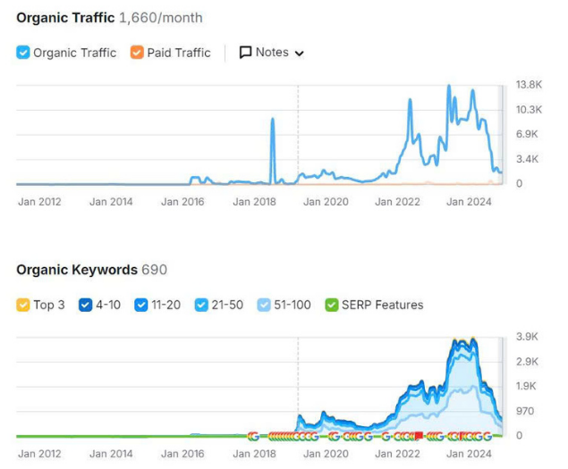
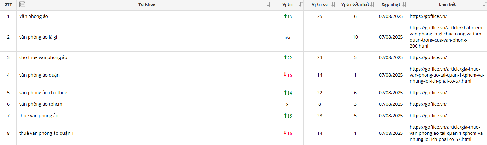
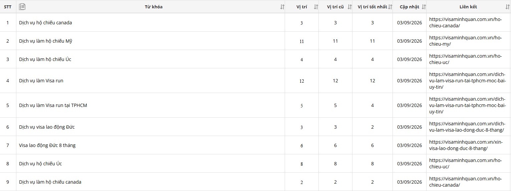
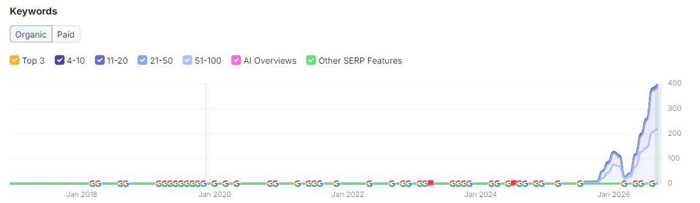
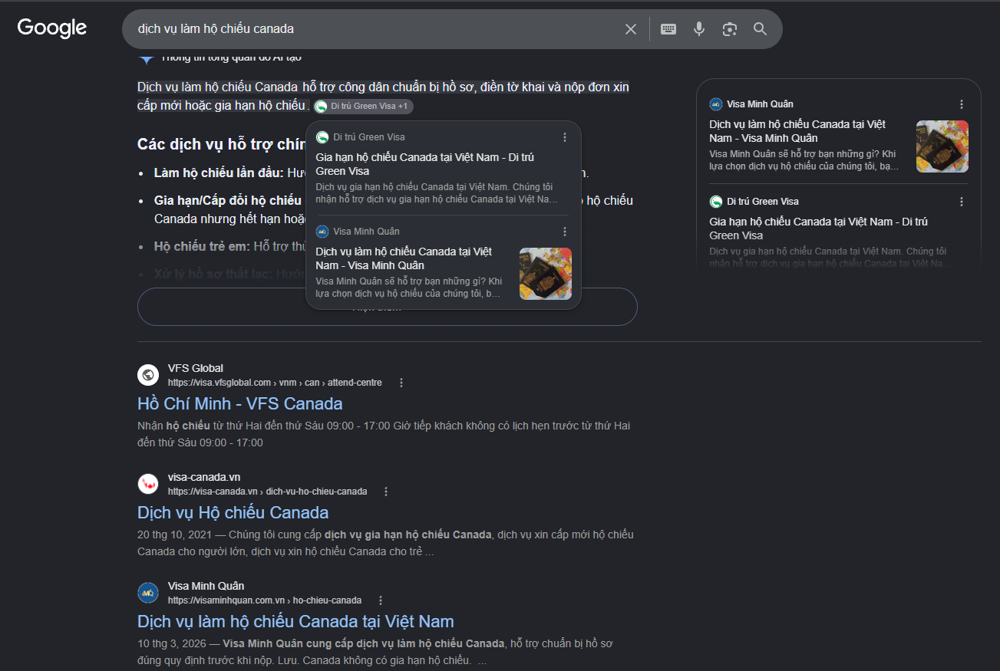
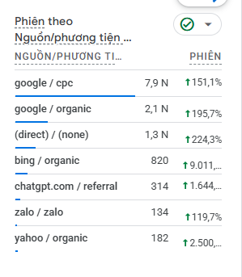

SEO Strategy
Keyword Research · Search Intent · Keyword Mapping · Topic Cluster · Phân tích SERP & đối thủ
NGUYỄN TRÂM ANH · SEO EXECUTIVE
SEO · CONTENT · DIGITAL MARKETING
Tôi không xem SEO đơn thuần là việc đưa từ khóa lên Top Google. Tôi muốn kết hợp SEO, nội dung, website và hình ảnh để đưa doanh nghiệp, sản phẩm và dịch vụ đến đúng khách hàng.
GÓC NHÌN
SEO EXECUTIVE · DIGITAL MARKETING
Tôi bắt đầu từ Content và Digital Marketing, sau đó phát triển sâu hơn về SEO. Trong quá trình làm việc, tôi quan tâm không chỉ một bài viết đứng ở vị trí nào trên Google, mà còn khách hàng nhìn thấy gì, hiểu doanh nghiệp như thế nào và nội dung có thực sự giúp họ tiến gần hơn đến sản phẩm, dịch vụ hay không.
Vì vậy, tôi muốn kết hợp SEO – Content – Website – Visual để xây dựng một hệ thống nội dung vừa có khả năng tiếp cận khách hàng trên công cụ tìm kiếm, vừa góp phần thể hiện hình ảnh và giá trị của doanh nghiệp.
NĂNG LỰC CHUYÊN MÔN
Keyword Research · Search Intent · Keyword Mapping · Topic Cluster · Phân tích SERP & đối thủ
Content Strategy · Content Planning · E-E-A-T · GEO/AEO · Content Optimization
Title · Meta · Heading · URL · Internal Link · Anchor Text · Image SEO · Schema
Indexing · Sitemap · Robots.txt · Canonical · Redirect · GSC · Ranking · Organic Traffic
SELECTED PROJECTS
G OFFICE · DIGITAL MARKETING & SEO
SEO Recovery · Content Strategy · Local SEO — khai thác lại một website lâu năm có sẵn authority, đồng thời tái tổ chức hệ thống content và Organic Search trong điều kiện hạn chế về IT.
Lợi thế sẵn có: domain lâu năm và hệ thống backlink mạnh từ các báo chính thống như Tuổi Trẻ, Thanh Niên...
Vấn đề SEO: trang chủ và nhóm trang dịch vụ dùng chung H1, Title, Meta theo code mặc định, khiến nhóm trang dịch vụ mất index.
Không có IT support, không thể xử lý tận gốc cấu trúc code SEO mặc định.
Đánh giá lượng lớn content cũ để xác định bài cần giữ, tối ưu hoặc loại bỏ.
Audit các bài đang có thứ hạng tốt nhưng hạn chế ảnh hưởng đến ranking hiện có.
Tái tổ chức content thành Topic/Cluster và xây dựng lại Internal Link.
Triển khai SEO Local tương ứng với hệ thống 6 chi nhánh.
Rà soát các bài đang có ranking tốt, chọn những bài có nội dung tương đồng với nhóm dịch vụ → audit và chuyển hóa thành bài SEO dịch vụ.
Rà soát content còn lại, phân loại thành các Topic/Cluster rõ ràng và xây dựng lại Internal Link theo từng nhóm chủ đề.
Xây dựng lại định hướng từ khóa thay cho hệ thống content được đăng trước đó mà không có keyword plan.
Nghiên cứu và triển khai bộ từ khóa Local tương ứng với 6 chi nhánh, kết hợp quản lý Google Business.


VISA MINH QUÂN · SEO
SEO Foundation · Website Rebuild · Organic Acquisition — xây lại nền tảng website và SEO sau khi hệ thống cũ không thể tiếp tục sử dụng.
Không kiểm soát được hosting trong thời gian tranh chấp quyền quản lý.
Không thể tiếp tục sử dụng source website cũ bị mã độc.
Duy trì domain trong thời gian xây dựng website mới.
Xây lại cấu trúc website theo định hướng SEO thay vì kế thừa hệ thống cũ.
Tạo Organic Search và chuyển đổi khi website chưa có backlink.
Ký với đơn vị hosting mới và chuyển quyền quản lý domain.
Redirect domain tạm thời về landing page trên Ladipage.
Phối hợp IT mới code website hoàn toàn mới, cấu trúc mới theo định hướng SEO.
Move domain sang website mới, bỏ toàn bộ source và data website cũ.
Triển khai Keyword Research, Content, On-page, Topic/Cluster, Internal Link và SEO dịch vụ.




bài viết được nghiên cứu, xây dựng, tối ưu và triển khai trực tiếp trong 2 dự án.
Audit · Keyword Research · Strategy · Content Production · On-page · Topic/Cluster · Internal Link · Ranking · Organic Traffic · Conversion
Visa Minh Quân
SEO website mới · Content Strategy · On-page · Technical phối hợpG Office
Content & SEO · Google Business · Website · MultimediaLiteFinance Academy
Quản lý Content · SEO On-page · phối hợp SEO/MarketingKendy Real · Toàn Phát
SEO Content · On-page/Off-page · Keyword ResearchMULTIMEDIA & DESIGN
Tôi có thể chủ động triển khai hình ảnh, banner, thumbnail, infographic, chụp ảnh và video cơ bản để hỗ trợ Content và Digital Marketing.
AI AS A WORKING PARTNER
Tôi tận dụng ChatGPT và Gemini như một “trợ lý” trong quá trình nghiên cứu, lập kế hoạch, triển khai và kiểm tra công việc. AI giúp tôi rút ngắn thời gian xử lý dữ liệu và mở rộng góc nhìn; còn định hướng, kiểm chứng và quyết định cuối cùng vẫn do tôi thực hiện.
Đưa dữ liệu, SERP, đối thủ hoặc brief vào AI để tổng hợp nhanh, tìm pattern và đặt thêm câu hỏi cần kiểm tra.
→ Từ dữ liệu thô đến insightHỗ trợ mở rộng keyword, nhóm Search Intent, xây Topic Cluster và brainstorm hướng nội dung trước khi tôi chốt cấu trúc.
→ Từ insight đến kế hoạchDùng AI để tạo outline, biến đổi góc triển khai, kiểm tra độ rõ ràng và hỗ trợ tối ưu passage — không copy nguyên output.
→ Từ brief đến bản nháp tốt hơnNhờ AI rà soát title, heading, internal link, FAQ, schema logic và những điểm có thể thiếu trong checklist SEO.
→ Từ triển khai đến kiểm traBrainstorm concept banner, thumbnail, visual direction, hook video và caption để biến một chủ đề SEO thành nhiều định dạng.
→ Từ nội dung đến hình ảnhDùng AI để tham khảo cấu trúc landing page, phân tầng thông tin, UX flow, bố cục section và ý tưởng UI trước khi tôi tự chỉnh theo mục tiêu SEO và hành vi người dùng.
→ Từ brief đến layout có lý doĐối chiếu nguồn, kiểm tra Search Intent, chỉnh giọng thương hiệu và chịu trách nhiệm về chất lượng đầu ra trước khi xuất bản.
→ AI hỗ trợ · Tôi quyết địnhCÁCH TÔI DÙNG AI
CÔNG CỤ TÔI THƯỜNG SỬ DỤNG
08 / LIÊN HỆ
Tôi sẵn sàng trao đổi về những dự án SEO, Content và Digital Marketing phù hợp.